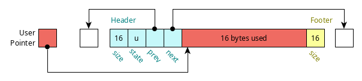
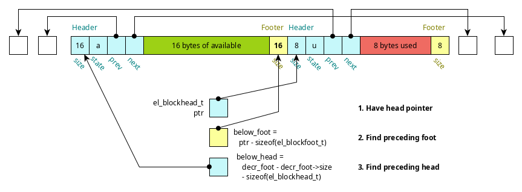
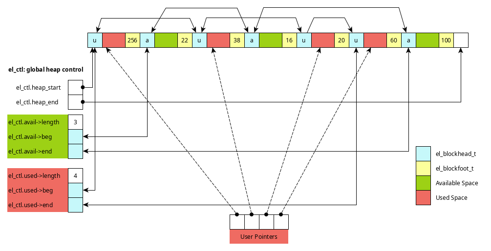
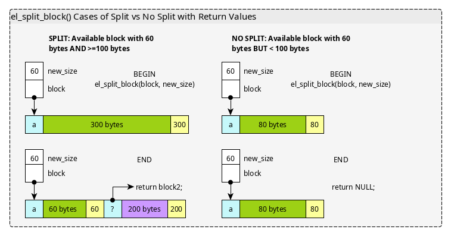
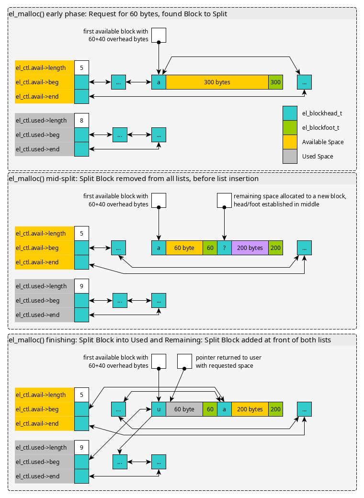
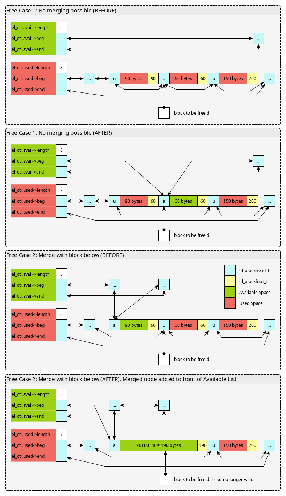
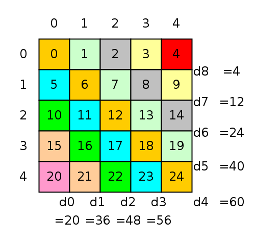

CMSC216 Project 5: Heaps and Performance Optimization
- Due: 11:59pm Fri 08-May-2026
- Approximately 2.0% of total grade
- Submit to Gradescope
- Free Collaboration is allowed on projects. See the Syllabus for details.
CODE/TEST DISTRIBUTION: p5-code.zip
Video Overview: https://umd.instructure.com/courses/1398391/pages/week-13-videos
CHANGELOG:
- Fri May 1 10:16:06 AM EDT 2026
Post 264 identified an arithmetic problem with the credit involved for Problem 2; it is worth 55 points.
Additionally, the
WORK_DISCLOSURE.txtdocument was absent from the initial release of the project and has been added in now. Up to 10% of project credit may be lost for failing to include this document. Those who have started the project already can runmake updateto get the template copy in their project directory and are advised to do so.
Table of Contents
- 1. Introduction
- 2. Download Code and Setup
- 3. Problem 1 : EL Malloc
- 3.1. EL Malloc Data Structures
- 3.2. Block Header/Footer
- 3.3. Blocks Above/Below
- 3.4. Block Lists and Global Control
- 3.5. Pointers and "Actual" Space
- 3.6. Doubly Linked List Operations
- 3.7. Allocation via Block Splitting
- 3.8. Freeing Blocks and Merging
- 3.9. Expanding the Heap
- 3.10. Overall Code Structure of EL Malloc
- 3.11. Demo Run using EL Malloc
- 3.12. Grading Criteria for Problem 1
- 4. Problem 2: Matrix Diagonal Sums
- 5. Work Disclosure
- 6. Assignment Submission
1 Introduction
This project features a two required problems pertaining to the final topics discussed in the course.
- EL Malloc implements a simple, explicit list memory allocator.
This manages heap memory in doubly linked lists of Available and
Used memory blocks to provide
el_malloc() / el_free(). It could be extended with some work to be a drop-in replacement formalloc() / free(). - A baseline implementation for a function operating on a matrix is provided and students will create an optimzied version of it which calculates the same result but in a shorter time. Doing so will involve exploiting knowledge of the memory hierarchy to favor cache and enabling multi-threading to further boost performance.
2 Download Code and Setup
Download the code pack linked at the top of the page. Unzip this which will create a project folder. Create new files in this folder. Ultimately you will re-zip this folder to submit it.
| File | State | Notes |
|---|---|---|
Makefile |
Provided | Problem 1 & 2 Build file |
testy |
Testing | Test running script |
el_malloc.h |
Provided | Problem 1 header file |
el_demo.h |
Provided | Problem 1 demo main() |
el_malloc.c |
COMPLETE | Problem 1 implemented REQUIRED functions |
test_el_malloc.c |
Testing | Problem 1 Testing program for El Malloc |
test_el_malloc.org |
Testing | Problem 1 Testing script for El Malloc |
sumdiag_optm.c |
EDIT | Problem 2 create and fill in optimized function definition |
sumdiag_benchmark.c |
Provided | Problem 2 main benchmark |
sumdiag_print.c |
Provided | Problem 2 testing program |
sumdiag_base.c |
Provided | Problem 2 baseline function to beat |
sumdiag.h |
Provided | Problem 2 header file |
sumdiag_util.c |
Provided | Problem 2 utility functions for matrices/vectors |
test_sumdiag.org |
Testing | Tests to check for memory issues in problem 2 |
3 Problem 1 : EL Malloc
A memory allocator is small system which manages heap memory,
sometimes referred to as the "data" segment of a program. This
portion of program memory is a linear set of addresses that form a
large block which can expand at runtime by making requests to the
operating system. Solving the allocation problem forms backbone of
what malloc()/free() do by keeping track of the space used and
released by a user program. Allocators also see use in garbage
collected languages like Java where there are no explicit free()
calls but the allocator must still find available space for new
objects.
One simple way to implement an allocator is to overlay linked lists on the heap which track at a minimum the available chunks of memory and possibly also the used chunks. This comes with a cost: some of the bytes of memory in the heap are no longer available for the user program but are instead used for the allocator's book-keeping.
In this problem, an explicit list allocator is developed, thus the
name of the system el_malloc. It uses two lists to track memory in
the heap:
- The Available List of blocks of memory that can be used to answer
calls to
malloc() - The Used List of blocks that have been returned by
malloc()and should not be returned again until they arefree()'d
Most operations boil down to manipulating these two lists in some form.
- Allocating with
ptr = el_malloc(size);searches the Available List for a block with sufficient size. That block is split into two blocks. One block answers the request and is given aboutsizebytes; it is moved to the Used List. The second block comprises the remainder of the space and remains on the Available List. - Deallocating with
el_free(ptr);moves the block referenced byptrfrom the Used List to the Available List. To prevent fragmentation of memory, the newly available block is merged with adjacent available blocks if possible.
3.1 EL Malloc Data Structures
Several data structures defined in el_malloc.h should be studied so
that one is acquainted with their intent. The following sections
outline many of these and show diagrams to indicate transformation
the required functions should implement.
3.2 Block Header/Footer
Each block of memory tracked by EL Malloc is preceded and succeeded by
some bytes of memory for book keeping. These are referred to as the
block "header" and "footer" and are encoded in the el_blockhead_t
and el_blockfoot_t structs.
// type which is a "header" for a block of memory; containts info on
// size, whether the block is available or in use, and links to the
// next/prev blocks in a doubly linked list. This data structure
// appears immediately before a block of memory that is tracked by the
// allocator.
typedef struct block {
size_t size; // number of bytes of memory in this block
char state; // either EL_AVAILABLE or EL_USED
struct block *next; // pointer to next block in same list
struct block *prev; // pointer to previous block in same list
} el_blockhead_t;
// Type for the "footer" of a block; indicates size of the preceding
// block so that its header el_blockhead_t can be found with pointer
// arithmetic. This data appears immediately after an area of memory
// that may be used by a user or is free. Immediately after it is
// either another header (el_blockhead_t) or the end of the heap.
typedef struct {
size_t size;
} el_blockfoot_t;
As indicated, the blocks use doubly linked nodes in the header which will allow easy re-arrangement of the list.
A picture of a block with its header, footer, and user data area is shown below.

Figure 1: Block data preceded by a header (el_blockhead_t) and followed by a footer (el_blockfoot_t)._
3.3 Blocks Above/Below
One might wonder why the footer appears. In tracking blocks, there will arise the need to work with a block that immediately precedes given block in memory in memory (not the previous in the linked list). The footer enables this by tracking the size of the user block of memory immediately beneath it.
This is illustrated in the diagram below.

Figure 2: Finding preceding block header using footer (el_block_below(header))
This operation is implemented in the function el_block_below(block) and
the similar operation el_block_above(block) finds the next header
immediately following one in memory.
The following functions use pointer arithmetic to determine block locations from a provided pointer.
el_blockfoot_t *el_get_footer(el_blockhead_t *block); el_blockhead_t *el_get_header(el_blockfoot_t *foot); el_blockhead_t *el_block_above(el_blockhead_t *block); el_blockhead_t *el_block_below(el_blockhead_t *block);
These functions benefit from macros defined in el_malloc.h that are
useful for doing pointer operations involving bytes.
// macro to add a byte offset to a pointer, arguments are a pointer // and a # of bytes (usually size_t) #define PTR_PLUS_BYTES(ptr,off) ((void *) (((size_t) (ptr)) + ((size_t) (off)))) // macro to add a byte offset to a pointer, arguments are a pointer // and a # of bytes (usually size_t) #define PTR_MINUS_BYTES(ptr,off) ((void *) (((size_t) (ptr)) - ((size_t) (off)))) // macro to add a byte offset to a pointer, arguments are a pointer // and a # of bytes (usually size_t) #define PTR_MINUS_PTR(ptr,ptq) (((size_t) (ptr)) - ((size_t) (ptq)))
3.4 Block Lists and Global Control
The main purpose of the memory allocator is to track the available and used blocks in explicit linked lists. This allows used and available memory to be distributed throughout the heap. Below are the data structures that track these lists and the global control data structure which houses information for the entire heap.
// Type for a list of blocks; doubly linked with a fixed
// "dummy" node at the beginning and end which do not contain any
// data. List tracks its length and number of bytes in use.
typedef struct {
el_blockhead_t beg_actual; // fixed node at beginning of list; state is EL_BEGIN_BLOCK
el_blockhead_t end_actual; // fixed node at end of list; state is EL_END_BLOCK
el_blockhead_t *beg; // pointer to beg_actual
el_blockhead_t *end; // pointer to end_actual
size_t length; // length of the used block list (not counting beg/end)
size_t bytes; // total bytes in list used including overhead;
} el_blocklist_t;
// NOTE: total available bytes for use/in-use in the list is (bytes - length*EL_BLOCK_OVERHEAD)
// Type for the global control of the allocator. Tracks heap size,
// start and end addresses, total size, and lists of available and
// used blocks.
typedef struct {
void *heap_start; // pointer to where the heap starts
void *heap_end; // pointer to where the heap ends; this memory address is out of bounds
size_t heap_bytes; // number of bytes currently in the heap
el_blocklist_t avail_actual; // space for the available list data
el_blocklist_t used_actual; // space for the used list data
el_blocklist_t *avail; // pointer to avail_actual
el_blocklist_t *used; // pointer to used_actual
} el_ctl_t;
The following diagram shows some of the structure induced by use of a
doubly linked lists overlaid onto the heap. The global control
structure el_ctl has two lists for available and used space.

Figure 3: Structure of heap with several used/available blocks. Pointers from el_ctl lists allow access to these blocks.
The following functions initialize the global control structures, print stats on the heap, and clean up at the end of execution.
int el_init(int max_bytes); void el_print_stats(); void el_cleanup();
3.5 Pointers and "Actual" Space
In several structures, there appear pointers named xxx and structs
named xxx_actual. For example, in el_blocklist_t:
typedef struct {
...
el_blockhead_t beg_actual; // fixed node at beginning of list; state is EL_BEGIN_BLOCK
el_blockhead_t *beg; // pointer to beg_actual
...
} el_blocklist_t;
The intent here is that there will always be a node at the beginning
of the doubly linked list to make the programming easier. It makes
sense to have an actual struct beg_actual present. However, when
working with the list, the address of the beginning node is often
referenced making beg useful. In any case, beg will be initialized
to &beg_actual as appears in el_init_blocklist().
void el_init_blocklist(el_blocklist_t *list){
list->beg = &(list->beg_actual);
list->beg->state = EL_BEGIN_BLOCK;
list->beg->size = EL_UNINITIALIZED;
...
}
Similarly, since there will always be an Available List, el_ctl_t
has both an avail pointer to the list and avail_actual which is
the struct for the list.
3.6 Doubly Linked List Operations
A large number of operations in EL Malloc boil down to doubly linked list operations. This includes
- Unlinking nodes from the middle of list during
el_free() - Adding nodes to the beginning of a headed list (allocation and free)
- Traversing the list to print and search for available blocks
Recall that unlinking a node from a doubly linked list involves modifying the previous and next node as in the following.
node->prev->next = node->next; node->next->prev = node->prev;
while adding a new node to the front is typically accomplished via
node->prev = list->beg; node->next = list->beg->next; node->prev->next = node; node->next->prev = node;
You may wish to review doubly linked list operations and do some reading on lists with "dummy" nodes at the beginning and ending if these concepts are rusty.
The following functions pertain to block list operations.
void el_init_blocklist(el_blocklist_t *list); void el_print_blocklist(el_blocklist_t *list); void el_add_block_front(el_blocklist_t *list, el_blockhead_t *block); void el_remove_block(el_blocklist_t *list, el_blockhead_t *block);
3.7 Allocation via Block Splitting
The basic operation of granting memory on a call to el_malloc(size)
involves finding an Available Block with enough bytes for the
requested amount of memory. In the event that the block is
significantly larger than the request and has enough space for a new
header and footer, it can be split into two blocks with one granting
the user request and another representing the remaining space.
Note that in some cases, blocks cannot be split: below is a diagram
showing case analysis for blocks that have sufficient size to meet
request but cannot be split. The diagram below illustrates the net
result of el_split_block() which may or may not split a block. Keep
in mind that any new block created is not assigned to either the
Available or Used lists but will be in later functions.

Figure 4: Shows the behavior of the el_split_block() function in two cases, a block large enough to split and one that is large enough to meet a request but cannot be split.
The rough steps for the el_malloc() function are shown below for
the case when block splitting occurs.
- A block that is large enough to split is located and removed from the Available list.
- If the block is large enough, it is cut into 2 parts: the requested size and the remainder with a head/foot in between; the original block is set to be part of the Used list and the remainder the Available list
- The blocks are added to the required lists and a pointer to the user data within the now Used block is returned.

Figure 5: Steps for el_malloc() when Splitting a block in an allocation request. The rough progression is shown after finding an appropriately sized block which is split into parts with list membership adjusted for both parts.
The following functions pertain to the location and splitting of blocks in the available list to fulfill allocation requests.
el_blockhead_t *el_find_first_avail(size_t size); el_blockhead_t *el_split_block(el_blockhead_t *block, size_t new_size); void *el_malloc(size_t nbytes);
3.8 Freeing Blocks and Merging
Freeing memory passes in a pointer to the user area that was
granted. Immediately preceding this should be a el_blockhead_t and
it can be found with pointer arithmetic.
In order to prevent memory from becoming continually divided into
smaller blocks, on freeing the system checks to see if adjacent blocks
can be merged. Keep in mind that the blocks that can be merged are
adjacent in memory, not next/previous in some linked list. Adjacent
blocks can be located using el_block_above() and el_block_below().
To merge, the adjacent blocks must both be Available (not Used). A free can then have several cases.
- The freed block cannot be merged with any others
- The freed block can be merged with only the block above it
- The freed block can be merged with only the block below it
- The freed block can be merged with both adjacent blocks
The diagrams below show two of these cases.

Figure 6: Two cases of freeing blocks. The 2nd involves merging adjacent nodes with available space.
With careful use of the below functions and handling of NULL
arguments, all 4 cases can be handled with very little code. Keep in
mind that el_block_above()/below() should return NULL if there is
no block above or below due to that are being out of the boundaries of
the heap.
el_blockhead_t *el_block_above(el_blockhead_t *block); el_blockhead_t *el_block_below(el_blockhead_t *block); void el_merge_block_with_above(el_blockhead_t *lower); void el_free(void *ptr);
3.9 Expanding the Heap
El Malloc initializes the heap with just a single page of memory
(EL_PAGE_BYTES = 4096 bytes) during el_init(). While good for
testing, a real application would need more space than this. The
beginnings of heap expansion are provided via the following
function.
int el_append_pages_to_heap(int npages); // REQUIRED // Attempts to append pages of memory to the heap with mmap(). npages // is how many pages are to be appended with total bytes to be // appended as npages * EL_PAGE_BYTES. Calls mmap() with similar // arguments to those used in el_init() however requests the address // of the pages to be at heap_end so that the heap grows // contiguously. If this fails, prints the message // // ERROR: Unable to mmap() additional 3 pages // // and returns 1. Otherwise, adjusts heap size and end for the // expanded heap. Creates a new block for the freshly allocated pages // that is added to the available list. Also attempts to merge this // block with the block below it. Returns 0 on success. // // NOTE ON mmap() USAGE: mmap() returns one of three things if a // specific address is requested (its first argument): // // 1. The address requested indicating the memory mapping succeeded // // 2. A different address than the one requested if the requeste // address is in use // // 3. The constant MAP_FAILED if the address mapping failed. // // #2 and #3 above should trigger this function to immediate print an // #error message and return 1 as the heap cannot be made continuous // #in those cases.
The central idea of the function is to allocate more space for the
heap through mmap() calls. Since it is desirable to treat the heap
a contiguous block of memory, the calls to mmap() should attempt to
map new space for the heap to the el_ctl->heap_end address thereby
"appending" the pages the heap.
Here are a few implementation notes.
- In some cases,
NULLis passed as the first argument tommap()as a user program does not care what virtual address the OS uses for pages of memory. However, El Malloc will have specific addresses that it uses for the heap start and expansion. - Analyze the provided
el_init()function which initially usesmmap()to create the heap. Many aspects of the setup function can be transferred here. - One difference is that while
el_init()allocates the heap atEL_HEAP_START_ADDRESS,el_append_pages_to_heap()should map pages starting at the heap end. This will create a continuous virtual memory space for the heap as it expands. - The Return Value for
mmap()is important and will be one of three things as the docs indicate: the requested address, a different address, orMAP_FAILED. The latter two indicate that heap expansion has failed.
3.10 Overall Code Structure of EL Malloc
Below is the code structure of the EL Malloc library. Some of the
functions have been implemented already while those marked REQUIRED
must be completed for full credit on the problem.
// el_malloc.c: implementation of explicit list malloc functions.
#include "el_malloc.h"
////////////////////////////////////////////////////////////////////////////////
// Global control functions
el_ctl_t *el_ctl = NULL;
// Global control variable for the allocator. Must be initialized in
// el_init().
int el_init(uint64_t initial_heap_size);
// Create an initial block of memory for the heap using
// mmap(). Initialize the el_ctl data structure to point at this
// block. The initializ size/position of the heap for the memory map
// are given in the argument symbol and EL_HEAP_START_ADDRESS.
// Initialize the lists in el_ctl to contain a single large block of
// available memory and no used blocks of memory.
void el_cleanup();
// Clean up the heap area associated with the system which unmaps all
// pages associated with the heap.
////////////////////////////////////////////////////////////////////////////////
// Pointer arithmetic functions to access adjacent headers/footers
el_blockfoot_t *el_get_footer(el_blockhead_t *head);
// Compute the address of the foot for the given head which is at a
// higher address than the head.
el_blockhead_t *el_get_header(el_blockfoot_t *foot);
// REQUIRED
// Compute the address of the head for the given foot which is at a
// lower address than the foot.
el_blockhead_t *el_block_above(el_blockhead_t *block);
// Return a pointer to the block that is one block higher in memory
// from the given block. This should be the size of the block plus
// the EL_BLOCK_OVERHEAD which is the space occupied by the header and
// footer. Returns NULL if the block above would be off the heap.
// DOES NOT follow next pointer, looks in adjacent memory.
el_blockhead_t *el_block_below(el_blockhead_t *block);
// REQUIRED
// Return a pointer to the block that is one block lower in memory
// from the given block. Uses the size of the preceding block found
// in its foot. DOES NOT follow block->next pointer, looks in adjacent
// memory. Returns NULL if the block below would be outside the heap.
//
// WARNING: This function must perform slightly different arithmetic
// than el_block_above(). Take care when implementing it.
////////////////////////////////////////////////////////////////////////////////
// Block list operations
void el_print_blocklist(el_blocklist_t *list);
// Print an entire blocklist. The format appears as follows.
//
// {length: 2 bytes: 3400}
// [ 0] head @ 0x600000000000 {state: a size: 128}
// [ 1] head @ 0x600000000360 {state: a size: 3192}
//
// Note that the '@' column uses the actual address of items which
// relies on a consistent mmap() starting point for the heap.
void el_print_block(el_blockhead_t *block);
// Print a single block during a sequential walk through the heap
void el_print_heap_blocks();
// Print all blocks in the heap in the order that they appear from
// lowest addrses to highest address
void el_print_stats();
// Print out stats on the heap for use in debugging. Shows the
// available and used list along with a linear walk through the heap
// blocks.
void el_init_blocklist(el_blocklist_t *list);
// Initialize the specified list to be empty. Sets the beg/end
// pointers to the actual space and initializes those data to be the
// ends of the list. Initializes length and size to 0.
void el_add_block_front(el_blocklist_t *list, el_blockhead_t *block);
// REQUIRED
// Add to the front of list; links for block are adjusted as are links
// within list. Length is incremented and the bytes for the list are
// updated to include the new block's size and its overhead.
void el_remove_block(el_blocklist_t *list, el_blockhead_t *block);
// REQUIRED
// Unlink block from the list it is in which should be the list
// parameter. Updates the length and bytes for that list including
// the EL_BLOCK_OVERHEAD bytes associated with header/footer.
////////////////////////////////////////////////////////////////////////////////
// Allocation-related functions
el_blockhead_t *el_find_first_avail(size_t size);
// REQUIRED
// Find the first block in the available list with block size of at
// least `size`. Returns a pointer to the found block or NULL if no
// block of sufficient size is available.
el_blockhead_t *el_split_block(el_blockhead_t *block, size_t new_size);
// REQUIRED
// Set the pointed to block to the given size and add a footer to
// it. Creates another block above it by creating a new header and
// assigning it the remaining space. Ensures that the new block has a
// footer with the correct size. Returns a pointer to the newly
// created block while the parameter block has its size altered to
// parameter size. Does not do any linking of blocks nor changes of
// list membership: this is done elsewhere. If the parameter block
// does not have sufficient size for a split (at least new_size +
// EL_BLOCK_OVERHEAD for the new header/footer) makes no changes tot
// the block and returns NULL indicating no new block was created.
void *el_malloc(size_t nbytes);
// REQUIRED
// Return pointer to a block of memory with at least the given size
// for use by the user. The pointer returned is to the usable space,
// not the block header. Makes use of find_first_avail() to find a
// suitable block and el_split_block() to split it. Returns NULL if
// no space is available.
////////////////////////////////////////////////////////////////////////////////
// De-allocation/free() related functions
void el_merge_block_with_above(el_blockhead_t *lower);
// REQUIRED
// Attempt to merge the block lower with the next block in
// memory. Does nothing if lower is null or not EL_AVAILABLE and does
// nothing if the next higher block is null (because lower is the last
// block) or not EL_AVAILABLE. Otherwise, locates the next block with
// el_block_above() and merges these two into a single block. Adjusts
// the fields of lower to incorporate the size of higher block and the
// reclaimed overhead. Adjusts footer of higher to indicate the two
// blocks are merged. Removes both lower and higher from the
// available list and re-adds lower to the front of the available
// list.
void el_free(void *ptr);
// REQUIRED
// Free the block pointed to by the give ptr. The area immediately
// preceding the pointer should contain an el_blockhead_t with information
// on the block size. Attempts to merge the free'd block with adjacent
// blocks using el_merge_block_with_above(). If called on a NULL
// pointer or the block is not in state EL_USED, prints the error
//
// ERROR: el_free() not called on an EL_USED block
//
// and returns immediately without further action.
////////////////////////////////////////////////////////////////////////////////
// HEAP EXPANSION FUNCTIONS
int el_append_pages_to_heap(int npages);
// REQUIRED
// Attempts to append pages of memory to the heap with mmap(). npages
// is how many pages are to be appended with total bytes to be
// appended as npages * EL_PAGE_BYTES. Calls mmap() with similar
// arguments to those used in el_init() however requests the address
// of the pages to be at heap_end so that the heap grows
// contiguously. If this fails, prints the message
//
// ERROR: Unable to mmap() additional 3 pages
//
// and returns 1. Otherwise, adjusts heap size and end for the
// expanded heap. Creates a new block for the freshly allocated pages
// that is added to the available list. Also attempts to merge this
// block with the block below it. Returns 0 on success.
//
// NOTE ON mmap() USAGE: mmap() returns one of three things if a
// specific address is requested (its first argument):
//
// 1. The address requested indicating the memory mapping succeeded
//
// 2. A different address than the one requested if the requeste
// address is in use
//
// 3. The constant MAP_FAILED if the address mapping failed.
//
// #2 and #3 above should trigger this function to immediate print an
// #error message and return 1 as the heap cannot be made continuous
// #in those cases.
3.11 Demo Run using EL Malloc
Below is a run showing the behavior of a series of el_malloc() /
el_free() calls. They are performed in the provided el_demo.c
program.
Source for el_demo.c
// el_demo.c: Shows use cases for el_malloc() and el_free(). This file
// can be used for testing but is not itself a test.
#include <stdio.h>
#include <stdlib.h>
#include <assert.h>
#include "el_malloc.h"
void print_ptr(char *str, void *ptr){
if(ptr == NULL){
printf("%s: (nil)\n", str);
}
else{
printf("%s: %p\n", str, ptr);
}
}
int main(){
printf("EL_BLOCK_OVERHEAD: %lu\n",EL_BLOCK_OVERHEAD);
el_init(EL_HEAP_DEFAULT_SIZE);
printf("INITIAL\n"); el_print_stats(); printf("\n");
void *p1 = el_malloc(128);
void *p2 = el_malloc(48);
void *p3 = el_malloc(156);
printf("MALLOC 3\n"); el_print_stats(); printf("\n");
printf("POINTERS\n");
print_ptr("p3",p3);
print_ptr("p2",p2);
print_ptr("p1",p1);
printf("\n");
void *p4 = el_malloc(22);
void *p5 = el_malloc(64);
printf("MALLOC 5\n"); el_print_stats(); printf("\n");
printf("POINTERS\n");
print_ptr("p5",p5);
print_ptr("p4",p4);
print_ptr("p3",p3);
print_ptr("p2",p2);
print_ptr("p1",p1);
printf("\n");
el_free(p1);
printf("FREE 1\n"); el_print_stats(); printf("\n");
el_free(p3);
printf("FREE 3\n"); el_print_stats(); printf("\n");
p3 = el_malloc(32);
p1 = el_malloc(200);
printf("ALLOC 3,1 AGAIN\n"); el_print_stats(); printf("\n");
printf("POINTERS\n");
print_ptr("p1",p1);
print_ptr("p3",p3);
print_ptr("p5",p5);
print_ptr("p4",p4);
print_ptr("p2",p2);
printf("\n");
el_free(p1);
printf("FREE'D 1\n"); el_print_stats(); printf("\n");
el_free(p2);
printf("FREE'D 2\n"); el_print_stats(); printf("\n");
p1 = el_malloc(3438);
p2 = el_malloc(1024);
printf("P2 FAILS\n");
printf("POINTERS\n");
print_ptr("p1",p1);
print_ptr("p3",p3);
print_ptr("p5",p5);
print_ptr("p4",p4);
print_ptr("p2",p2);
el_print_stats(); printf("\n");
el_append_pages_to_heap(3);
printf("APPENDED PAGES\n"); el_print_stats(); printf("\n");
p2 = el_malloc(1024);
printf("P2 SUCCEEDS\n");
printf("POINTERS\n");
print_ptr("p1",p1);
print_ptr("p3",p3);
print_ptr("p5",p5);
print_ptr("p4",p4);
print_ptr("p2",p2);
el_print_stats(); printf("\n");
el_free(p1);
el_free(p2);
el_free(p3);
el_free(p4);
el_free(p5);
printf("FREE'D 1-5\n"); el_print_stats(); printf("\n");
el_cleanup();
return 0;
}
Output of El Malloc Demo
EL_BLOCK_OVERHEAD: 40
INITIAL
HEAP STATS (overhead per node: 40)
heap_start: 0x612000000000
heap_end: 0x612000001000
total_bytes: 4096
AVAILABLE LIST: {length: 1 bytes: 4096}
[ 0] head @ 0x612000000000 {state: a size: 4056}
USED LIST: {length: 0 bytes: 0}
HEAP BLOCKS:
[ 0] @ 0x612000000000
state: a
size: 4056 (total: 0x1000)
prev: 0x610000000018
next: 0x610000000038
user: 0x612000000020
foot: 0x612000000ff8
foot->size: 4056
MALLOC 3
HEAP STATS (overhead per node: 40)
heap_start: 0x612000000000
heap_end: 0x612000001000
total_bytes: 4096
AVAILABLE LIST: {length: 1 bytes: 3644}
[ 0] head @ 0x6120000001c4 {state: a size: 3604}
USED LIST: {length: 3 bytes: 452}
[ 0] head @ 0x612000000100 {state: u size: 156}
[ 1] head @ 0x6120000000a8 {state: u size: 48}
[ 2] head @ 0x612000000000 {state: u size: 128}
HEAP BLOCKS:
[ 0] @ 0x612000000000
state: u
size: 128 (total: 0xa8)
prev: 0x6120000000a8
next: 0x610000000098
user: 0x612000000020
foot: 0x6120000000a0
foot->size: 128
[ 1] @ 0x6120000000a8
state: u
size: 48 (total: 0x58)
prev: 0x612000000100
next: 0x612000000000
user: 0x6120000000c8
foot: 0x6120000000f8
foot->size: 48
[ 2] @ 0x612000000100
state: u
size: 156 (total: 0xc4)
prev: 0x610000000078
next: 0x6120000000a8
user: 0x612000000120
foot: 0x6120000001bc
foot->size: 156
[ 3] @ 0x6120000001c4
state: a
size: 3604 (total: 0xe3c)
prev: 0x610000000018
next: 0x610000000038
user: 0x6120000001e4
foot: 0x612000000ff8
foot->size: 3604
POINTERS
p3: 0x612000000120
p2: 0x6120000000c8
p1: 0x612000000020
MALLOC 5
HEAP STATS (overhead per node: 40)
heap_start: 0x612000000000
heap_end: 0x612000001000
total_bytes: 4096
AVAILABLE LIST: {length: 1 bytes: 3478}
[ 0] head @ 0x61200000026a {state: a size: 3438}
USED LIST: {length: 5 bytes: 618}
[ 0] head @ 0x612000000202 {state: u size: 64}
[ 1] head @ 0x6120000001c4 {state: u size: 22}
[ 2] head @ 0x612000000100 {state: u size: 156}
[ 3] head @ 0x6120000000a8 {state: u size: 48}
[ 4] head @ 0x612000000000 {state: u size: 128}
HEAP BLOCKS:
[ 0] @ 0x612000000000
state: u
size: 128 (total: 0xa8)
prev: 0x6120000000a8
next: 0x610000000098
user: 0x612000000020
foot: 0x6120000000a0
foot->size: 128
[ 1] @ 0x6120000000a8
state: u
size: 48 (total: 0x58)
prev: 0x612000000100
next: 0x612000000000
user: 0x6120000000c8
foot: 0x6120000000f8
foot->size: 48
[ 2] @ 0x612000000100
state: u
size: 156 (total: 0xc4)
prev: 0x6120000001c4
next: 0x6120000000a8
user: 0x612000000120
foot: 0x6120000001bc
foot->size: 156
[ 3] @ 0x6120000001c4
state: u
size: 22 (total: 0x3e)
prev: 0x612000000202
next: 0x612000000100
user: 0x6120000001e4
foot: 0x6120000001fa
foot->size: 22
[ 4] @ 0x612000000202
state: u
size: 64 (total: 0x68)
prev: 0x610000000078
next: 0x6120000001c4
user: 0x612000000222
foot: 0x612000000262
foot->size: 64
[ 5] @ 0x61200000026a
state: a
size: 3438 (total: 0xd96)
prev: 0x610000000018
next: 0x610000000038
user: 0x61200000028a
foot: 0x612000000ff8
foot->size: 3438
POINTERS
p5: 0x612000000222
p4: 0x6120000001e4
p3: 0x612000000120
p2: 0x6120000000c8
p1: 0x612000000020
FREE 1
HEAP STATS (overhead per node: 40)
heap_start: 0x612000000000
heap_end: 0x612000001000
total_bytes: 4096
AVAILABLE LIST: {length: 2 bytes: 3646}
[ 0] head @ 0x612000000000 {state: a size: 128}
[ 1] head @ 0x61200000026a {state: a size: 3438}
USED LIST: {length: 4 bytes: 450}
[ 0] head @ 0x612000000202 {state: u size: 64}
[ 1] head @ 0x6120000001c4 {state: u size: 22}
[ 2] head @ 0x612000000100 {state: u size: 156}
[ 3] head @ 0x6120000000a8 {state: u size: 48}
HEAP BLOCKS:
[ 0] @ 0x612000000000
state: a
size: 128 (total: 0xa8)
prev: 0x610000000018
next: 0x61200000026a
user: 0x612000000020
foot: 0x6120000000a0
foot->size: 128
[ 1] @ 0x6120000000a8
state: u
size: 48 (total: 0x58)
prev: 0x612000000100
next: 0x610000000098
user: 0x6120000000c8
foot: 0x6120000000f8
foot->size: 48
[ 2] @ 0x612000000100
state: u
size: 156 (total: 0xc4)
prev: 0x6120000001c4
next: 0x6120000000a8
user: 0x612000000120
foot: 0x6120000001bc
foot->size: 156
[ 3] @ 0x6120000001c4
state: u
size: 22 (total: 0x3e)
prev: 0x612000000202
next: 0x612000000100
user: 0x6120000001e4
foot: 0x6120000001fa
foot->size: 22
[ 4] @ 0x612000000202
state: u
size: 64 (total: 0x68)
prev: 0x610000000078
next: 0x6120000001c4
user: 0x612000000222
foot: 0x612000000262
foot->size: 64
[ 5] @ 0x61200000026a
state: a
size: 3438 (total: 0xd96)
prev: 0x612000000000
next: 0x610000000038
user: 0x61200000028a
foot: 0x612000000ff8
foot->size: 3438
FREE 3
HEAP STATS (overhead per node: 40)
heap_start: 0x612000000000
heap_end: 0x612000001000
total_bytes: 4096
AVAILABLE LIST: {length: 3 bytes: 3842}
[ 0] head @ 0x612000000100 {state: a size: 156}
[ 1] head @ 0x612000000000 {state: a size: 128}
[ 2] head @ 0x61200000026a {state: a size: 3438}
USED LIST: {length: 3 bytes: 254}
[ 0] head @ 0x612000000202 {state: u size: 64}
[ 1] head @ 0x6120000001c4 {state: u size: 22}
[ 2] head @ 0x6120000000a8 {state: u size: 48}
HEAP BLOCKS:
[ 0] @ 0x612000000000
state: a
size: 128 (total: 0xa8)
prev: 0x612000000100
next: 0x61200000026a
user: 0x612000000020
foot: 0x6120000000a0
foot->size: 128
[ 1] @ 0x6120000000a8
state: u
size: 48 (total: 0x58)
prev: 0x6120000001c4
next: 0x610000000098
user: 0x6120000000c8
foot: 0x6120000000f8
foot->size: 48
[ 2] @ 0x612000000100
state: a
size: 156 (total: 0xc4)
prev: 0x610000000018
next: 0x612000000000
user: 0x612000000120
foot: 0x6120000001bc
foot->size: 156
[ 3] @ 0x6120000001c4
state: u
size: 22 (total: 0x3e)
prev: 0x612000000202
next: 0x6120000000a8
user: 0x6120000001e4
foot: 0x6120000001fa
foot->size: 22
[ 4] @ 0x612000000202
state: u
size: 64 (total: 0x68)
prev: 0x610000000078
next: 0x6120000001c4
user: 0x612000000222
foot: 0x612000000262
foot->size: 64
[ 5] @ 0x61200000026a
state: a
size: 3438 (total: 0xd96)
prev: 0x612000000000
next: 0x610000000038
user: 0x61200000028a
foot: 0x612000000ff8
foot->size: 3438
ALLOC 3,1 AGAIN
HEAP STATS (overhead per node: 40)
heap_start: 0x612000000000
heap_end: 0x612000001000
total_bytes: 4096
AVAILABLE LIST: {length: 3 bytes: 3530}
[ 0] head @ 0x61200000035a {state: a size: 3198}
[ 1] head @ 0x612000000148 {state: a size: 84}
[ 2] head @ 0x612000000000 {state: a size: 128}
USED LIST: {length: 5 bytes: 566}
[ 0] head @ 0x61200000026a {state: u size: 200}
[ 1] head @ 0x612000000100 {state: u size: 32}
[ 2] head @ 0x612000000202 {state: u size: 64}
[ 3] head @ 0x6120000001c4 {state: u size: 22}
[ 4] head @ 0x6120000000a8 {state: u size: 48}
HEAP BLOCKS:
[ 0] @ 0x612000000000
state: a
size: 128 (total: 0xa8)
prev: 0x612000000148
next: 0x610000000038
user: 0x612000000020
foot: 0x6120000000a0
foot->size: 128
[ 1] @ 0x6120000000a8
state: u
size: 48 (total: 0x58)
prev: 0x6120000001c4
next: 0x610000000098
user: 0x6120000000c8
foot: 0x6120000000f8
foot->size: 48
[ 2] @ 0x612000000100
state: u
size: 32 (total: 0x48)
prev: 0x61200000026a
next: 0x612000000202
user: 0x612000000120
foot: 0x612000000140
foot->size: 32
[ 3] @ 0x612000000148
state: a
size: 84 (total: 0x7c)
prev: 0x61200000035a
next: 0x612000000000
user: 0x612000000168
foot: 0x6120000001bc
foot->size: 84
[ 4] @ 0x6120000001c4
state: u
size: 22 (total: 0x3e)
prev: 0x612000000202
next: 0x6120000000a8
user: 0x6120000001e4
foot: 0x6120000001fa
foot->size: 22
[ 5] @ 0x612000000202
state: u
size: 64 (total: 0x68)
prev: 0x612000000100
next: 0x6120000001c4
user: 0x612000000222
foot: 0x612000000262
foot->size: 64
[ 6] @ 0x61200000026a
state: u
size: 200 (total: 0xf0)
prev: 0x610000000078
next: 0x612000000100
user: 0x61200000028a
foot: 0x612000000352
foot->size: 200
[ 7] @ 0x61200000035a
state: a
size: 3198 (total: 0xca6)
prev: 0x610000000018
next: 0x612000000148
user: 0x61200000037a
foot: 0x612000000ff8
foot->size: 3198
POINTERS
p1: 0x61200000028a
p3: 0x612000000120
p5: 0x612000000222
p4: 0x6120000001e4
p2: 0x6120000000c8
FREE'D 1
HEAP STATS (overhead per node: 40)
heap_start: 0x612000000000
heap_end: 0x612000001000
total_bytes: 4096
AVAILABLE LIST: {length: 3 bytes: 3770}
[ 0] head @ 0x61200000026a {state: a size: 3438}
[ 1] head @ 0x612000000148 {state: a size: 84}
[ 2] head @ 0x612000000000 {state: a size: 128}
USED LIST: {length: 4 bytes: 326}
[ 0] head @ 0x612000000100 {state: u size: 32}
[ 1] head @ 0x612000000202 {state: u size: 64}
[ 2] head @ 0x6120000001c4 {state: u size: 22}
[ 3] head @ 0x6120000000a8 {state: u size: 48}
HEAP BLOCKS:
[ 0] @ 0x612000000000
state: a
size: 128 (total: 0xa8)
prev: 0x612000000148
next: 0x610000000038
user: 0x612000000020
foot: 0x6120000000a0
foot->size: 128
[ 1] @ 0x6120000000a8
state: u
size: 48 (total: 0x58)
prev: 0x6120000001c4
next: 0x610000000098
user: 0x6120000000c8
foot: 0x6120000000f8
foot->size: 48
[ 2] @ 0x612000000100
state: u
size: 32 (total: 0x48)
prev: 0x610000000078
next: 0x612000000202
user: 0x612000000120
foot: 0x612000000140
foot->size: 32
[ 3] @ 0x612000000148
state: a
size: 84 (total: 0x7c)
prev: 0x61200000026a
next: 0x612000000000
user: 0x612000000168
foot: 0x6120000001bc
foot->size: 84
[ 4] @ 0x6120000001c4
state: u
size: 22 (total: 0x3e)
prev: 0x612000000202
next: 0x6120000000a8
user: 0x6120000001e4
foot: 0x6120000001fa
foot->size: 22
[ 5] @ 0x612000000202
state: u
size: 64 (total: 0x68)
prev: 0x612000000100
next: 0x6120000001c4
user: 0x612000000222
foot: 0x612000000262
foot->size: 64
[ 6] @ 0x61200000026a
state: a
size: 3438 (total: 0xd96)
prev: 0x610000000018
next: 0x612000000148
user: 0x61200000028a
foot: 0x612000000ff8
foot->size: 3438
FREE'D 2
HEAP STATS (overhead per node: 40)
heap_start: 0x612000000000
heap_end: 0x612000001000
total_bytes: 4096
AVAILABLE LIST: {length: 3 bytes: 3858}
[ 0] head @ 0x612000000000 {state: a size: 216}
[ 1] head @ 0x61200000026a {state: a size: 3438}
[ 2] head @ 0x612000000148 {state: a size: 84}
USED LIST: {length: 3 bytes: 238}
[ 0] head @ 0x612000000100 {state: u size: 32}
[ 1] head @ 0x612000000202 {state: u size: 64}
[ 2] head @ 0x6120000001c4 {state: u size: 22}
HEAP BLOCKS:
[ 0] @ 0x612000000000
state: a
size: 216 (total: 0x100)
prev: 0x610000000018
next: 0x61200000026a
user: 0x612000000020
foot: 0x6120000000f8
foot->size: 216
[ 1] @ 0x612000000100
state: u
size: 32 (total: 0x48)
prev: 0x610000000078
next: 0x612000000202
user: 0x612000000120
foot: 0x612000000140
foot->size: 32
[ 2] @ 0x612000000148
state: a
size: 84 (total: 0x7c)
prev: 0x61200000026a
next: 0x610000000038
user: 0x612000000168
foot: 0x6120000001bc
foot->size: 84
[ 3] @ 0x6120000001c4
state: u
size: 22 (total: 0x3e)
prev: 0x612000000202
next: 0x610000000098
user: 0x6120000001e4
foot: 0x6120000001fa
foot->size: 22
[ 4] @ 0x612000000202
state: u
size: 64 (total: 0x68)
prev: 0x612000000100
next: 0x6120000001c4
user: 0x612000000222
foot: 0x612000000262
foot->size: 64
[ 5] @ 0x61200000026a
state: a
size: 3438 (total: 0xd96)
prev: 0x612000000000
next: 0x612000000148
user: 0x61200000028a
foot: 0x612000000ff8
foot->size: 3438
P2 FAILS
POINTERS
p1: 0x61200000028a
p3: 0x612000000120
p5: 0x612000000222
p4: 0x6120000001e4
p2: (nil)
HEAP STATS (overhead per node: 40)
heap_start: 0x612000000000
heap_end: 0x612000001000
total_bytes: 4096
AVAILABLE LIST: {length: 2 bytes: 380}
[ 0] head @ 0x612000000000 {state: a size: 216}
[ 1] head @ 0x612000000148 {state: a size: 84}
USED LIST: {length: 4 bytes: 3716}
[ 0] head @ 0x61200000026a {state: u size: 3438}
[ 1] head @ 0x612000000100 {state: u size: 32}
[ 2] head @ 0x612000000202 {state: u size: 64}
[ 3] head @ 0x6120000001c4 {state: u size: 22}
HEAP BLOCKS:
[ 0] @ 0x612000000000
state: a
size: 216 (total: 0x100)
prev: 0x610000000018
next: 0x612000000148
user: 0x612000000020
foot: 0x6120000000f8
foot->size: 216
[ 1] @ 0x612000000100
state: u
size: 32 (total: 0x48)
prev: 0x61200000026a
next: 0x612000000202
user: 0x612000000120
foot: 0x612000000140
foot->size: 32
[ 2] @ 0x612000000148
state: a
size: 84 (total: 0x7c)
prev: 0x612000000000
next: 0x610000000038
user: 0x612000000168
foot: 0x6120000001bc
foot->size: 84
[ 3] @ 0x6120000001c4
state: u
size: 22 (total: 0x3e)
prev: 0x612000000202
next: 0x610000000098
user: 0x6120000001e4
foot: 0x6120000001fa
foot->size: 22
[ 4] @ 0x612000000202
state: u
size: 64 (total: 0x68)
prev: 0x612000000100
next: 0x6120000001c4
user: 0x612000000222
foot: 0x612000000262
foot->size: 64
[ 5] @ 0x61200000026a
state: u
size: 3438 (total: 0xd96)
prev: 0x610000000078
next: 0x612000000100
user: 0x61200000028a
foot: 0x612000000ff8
foot->size: 3438
APPENDED PAGES
HEAP STATS (overhead per node: 40)
heap_start: 0x612000000000
heap_end: 0x612000004000
total_bytes: 16384
AVAILABLE LIST: {length: 3 bytes: 12668}
[ 0] head @ 0x612000001000 {state: a size: 12248}
[ 1] head @ 0x612000000000 {state: a size: 216}
[ 2] head @ 0x612000000148 {state: a size: 84}
USED LIST: {length: 4 bytes: 3716}
[ 0] head @ 0x61200000026a {state: u size: 3438}
[ 1] head @ 0x612000000100 {state: u size: 32}
[ 2] head @ 0x612000000202 {state: u size: 64}
[ 3] head @ 0x6120000001c4 {state: u size: 22}
HEAP BLOCKS:
[ 0] @ 0x612000000000
state: a
size: 216 (total: 0x100)
prev: 0x612000001000
next: 0x612000000148
user: 0x612000000020
foot: 0x6120000000f8
foot->size: 216
[ 1] @ 0x612000000100
state: u
size: 32 (total: 0x48)
prev: 0x61200000026a
next: 0x612000000202
user: 0x612000000120
foot: 0x612000000140
foot->size: 32
[ 2] @ 0x612000000148
state: a
size: 84 (total: 0x7c)
prev: 0x612000000000
next: 0x610000000038
user: 0x612000000168
foot: 0x6120000001bc
foot->size: 84
[ 3] @ 0x6120000001c4
state: u
size: 22 (total: 0x3e)
prev: 0x612000000202
next: 0x610000000098
user: 0x6120000001e4
foot: 0x6120000001fa
foot->size: 22
[ 4] @ 0x612000000202
state: u
size: 64 (total: 0x68)
prev: 0x612000000100
next: 0x6120000001c4
user: 0x612000000222
foot: 0x612000000262
foot->size: 64
[ 5] @ 0x61200000026a
state: u
size: 3438 (total: 0xd96)
prev: 0x610000000078
next: 0x612000000100
user: 0x61200000028a
foot: 0x612000000ff8
foot->size: 3438
[ 6] @ 0x612000001000
state: a
size: 12248 (total: 0x3000)
prev: 0x610000000018
next: 0x612000000000
user: 0x612000001020
foot: 0x612000003ff8
foot->size: 12248
P2 SUCCEEDS
POINTERS
p1: 0x61200000028a
p3: 0x612000000120
p5: 0x612000000222
p4: 0x6120000001e4
p2: 0x612000001020
HEAP STATS (overhead per node: 40)
heap_start: 0x612000000000
heap_end: 0x612000004000
total_bytes: 16384
AVAILABLE LIST: {length: 3 bytes: 11604}
[ 0] head @ 0x612000001428 {state: a size: 11184}
[ 1] head @ 0x612000000000 {state: a size: 216}
[ 2] head @ 0x612000000148 {state: a size: 84}
USED LIST: {length: 5 bytes: 4780}
[ 0] head @ 0x612000001000 {state: u size: 1024}
[ 1] head @ 0x61200000026a {state: u size: 3438}
[ 2] head @ 0x612000000100 {state: u size: 32}
[ 3] head @ 0x612000000202 {state: u size: 64}
[ 4] head @ 0x6120000001c4 {state: u size: 22}
HEAP BLOCKS:
[ 0] @ 0x612000000000
state: a
size: 216 (total: 0x100)
prev: 0x612000001428
next: 0x612000000148
user: 0x612000000020
foot: 0x6120000000f8
foot->size: 216
[ 1] @ 0x612000000100
state: u
size: 32 (total: 0x48)
prev: 0x61200000026a
next: 0x612000000202
user: 0x612000000120
foot: 0x612000000140
foot->size: 32
[ 2] @ 0x612000000148
state: a
size: 84 (total: 0x7c)
prev: 0x612000000000
next: 0x610000000038
user: 0x612000000168
foot: 0x6120000001bc
foot->size: 84
[ 3] @ 0x6120000001c4
state: u
size: 22 (total: 0x3e)
prev: 0x612000000202
next: 0x610000000098
user: 0x6120000001e4
foot: 0x6120000001fa
foot->size: 22
[ 4] @ 0x612000000202
state: u
size: 64 (total: 0x68)
prev: 0x612000000100
next: 0x6120000001c4
user: 0x612000000222
foot: 0x612000000262
foot->size: 64
[ 5] @ 0x61200000026a
state: u
size: 3438 (total: 0xd96)
prev: 0x612000001000
next: 0x612000000100
user: 0x61200000028a
foot: 0x612000000ff8
foot->size: 3438
[ 6] @ 0x612000001000
state: u
size: 1024 (total: 0x428)
prev: 0x610000000078
next: 0x61200000026a
user: 0x612000001020
foot: 0x612000001420
foot->size: 1024
[ 7] @ 0x612000001428
state: a
size: 11184 (total: 0x2bd8)
prev: 0x610000000018
next: 0x612000000000
user: 0x612000001448
foot: 0x612000003ff8
foot->size: 11184
FREE'D 1-5
HEAP STATS (overhead per node: 40)
heap_start: 0x612000000000
heap_end: 0x612000004000
total_bytes: 16384
AVAILABLE LIST: {length: 1 bytes: 16384}
[ 0] head @ 0x612000000000 {state: a size: 16344}
USED LIST: {length: 0 bytes: 0}
HEAP BLOCKS:
[ 0] @ 0x612000000000
state: a
size: 16344 (total: 0x4000)
prev: 0x610000000018
next: 0x610000000038
user: 0x612000000020
foot: 0x612000003ff8
foot->size: 16344
3.12 Grading Criteria for Problem 1 grading 45
| Weight | Criteria |
|---|---|
| Automated Tests | |
| 20 | make test-prob1 runs tests for correctness with Valgrind enabled |
| 20 tests, 1 point per test | |
| 25 | Manual Inspection |
| 4 | Code Style: Functions adhere to CMSC 216 C Coding Style Guide which dictates reasonable indentation, commenting, consistency of curly usage, etc. |
| 3 | el_get_header() and el_block_below() |
| Use of provided macros for pointer arithmetic | |
Correct use of sizeof() operator to account for sizes |
|
el_block_below() checks for beginning of heap and returns NULL |
|
| 3 | el_add_block_front() and el_remove_block() |
| Sensible use of pointers prev/next to link/unlink nodes efficiently; no looping used | |
| Correct updating of list length and bytes | |
Accounts for EL_BLOCK_OVERHEAD when updating bytes |
|
| 3 | el_split_block() |
Use of el_get_footer() to obtain footers for updating size |
|
| Checks to determine if block is large enough to be split; returns NULL if not | |
| Clear evidence of placing a new header and footer for new block when splitting | |
Accounting for overhead EL_BLOCK_OVERHEAD when calculating new size |
|
| 3 | el_malloc() |
Use of el_find_first_avail() to locate a node to split |
|
Use of el_split_block() to split block into two |
|
| Clear state change of split blocks to Used and Available | |
| Clear movement of lower split blocks to front of Used List | |
| Clear movement of upper split blocks to front of Available lists | |
| Use of pointer arithmetic macros to computer user address | |
| 3 | el_merge_block_with_above() |
NULL checks for argument and block above which result in no changes |
|
Clear checks of whether both blocks are EL_AVAILABLE |
|
Use of el_block_above() to find block above |
|
| Clear updates to size of lower block and higher foot | |
| Movement of blocks out of available list and merged block to front | |
| 3 | el_free() |
Error checking that block is EL_USED |
|
| Movement of block from used to available list | |
| Attempts to merge block with blocks above and below it | |
| 3 | el_append_pages_to_heap() |
Makes use of mmap() to map in additional pages of virtual memory |
|
Checks mmap() for failures and prints appropriate error messages |
|
| Maps new heap space to current heap end to create a contiguous heap | |
| Creates new available block for new space and attempts to merge with existing available blocks | |
| 45 | Problem Total |
4 Problem 2: Matrix Diagonal Sums
4.1 Overview
A problem that occasionally arises in numerical computing when working with Matrices (2D Arrays) is to compute the sums of the Diagonals of a matrix. The main diagonal of a matrix is comprised of all elements at indices (0,0), (1,1), (2,2), and so forth. There are several numbering schemes for diagonals but we will use the one represented in the following diagram which also shows the sums of the diagonals.

Figure 7: 5 by 5 matrix with diagonals colored. The diagram shows our numbering scheme for diagonals and the corresponding diagonal sums. Diagonal numbers start at 0 and progress counter-clockwise around the bottom and right of the matrix. For square matrices, the main diagonal is always numbered as the #rows-1 or #cols-1 which are equal.
A code is provided in the file sumdiag_base.c which computes the
sums of diagonals and stores them in a vector. The algorithm does so
using the most "natural" approach of walking down each diagonal and
totaling its elements then storing the result in the associated vector
element. As you survey the code, note the use of various convenience
functions such as mget(mat,i,j) and vset(vec,i,x) to interact with
the matrix and vector types used.
int sumdiag_BASE_NORMAL(matrix_t mat, vector_t vec) {
if(vec.len != (mat.rows + mat.cols -1)){
printf("sumdiag_base: bad sizes\n");
return 1;
}
for(int i=0; i<vec.len; i++){ // initialize vector of diagonal sums
VSET(vec,i,0); // to all 0s
}
for(int d=0; d < mat.rows; d++){ // iterate over lower diagonals
int c = 0; // col always starts at 0 in lower diags
for(int r=mat.rows-d-1; r<mat.rows; r++,c++){ // work down rows, right cols for same diag
int el_rc = MGET(mat, r, c); // get matrix element on diagonal
int vec_d = VGET(vec, d); // retrieve current sum for diag
VSET(vec, d, el_rc+vec_d); // add on back to the diagonal sum
}
}
int maxdiag = (mat.rows+mat.cols)-1; // calculate last diagonal
for(int d=mat.rows; d < maxdiag ; d++){ // iterate starting at first upper diag
int r = 0; // row always starts at 0 in upper diags
for(int c=d-mat.cols+1; c<mat.cols; r++,c++){ // work down rows, right cols for same diag
int el_rc = MGET(mat, r, c); // matrix element
int vec_d = VGET(vec, d); // diagonal sum from vector
VSET(vec, d, el_rc+vec_d); // add on to sum
}
}
return 0; // return success
}
While this algorithm is a direct translation of how humans would visually calculate the sums of diagonals for small matrices, it is unfortunately fairly slow when executing on most modern computing systems.
4.2 Optimize Diagonal Sums
The purpose of this problem is to write sumdiag_OPTM() which is a
faster version of the provided sumdiag_BASE() to calculate the sums
of diagonals.
Write your code in the file sumdiag_optm.c.
Keep the following things in mind.
- You will need to acquaint yourself with the functions and types
related to matrices and vectors provided in the
matvec.hand demonstrated in the baseline function. Understanding the layout of the matrix in memory is essential to unlocking performance. - The goal of
sumdiag_OPTM()is to exceed the performance ofsumdiag_BASE()by as much as possible. - To achieve this goal, several optimizations must be implemented and suggestions are given in a later section.
- There is one additional parameter to the optimized function:
sumdiag_OPTM(mat,vec,thread_count). This indicates the number of threads that should be used to compute diagonal sums. - Part of your grade will be based on the speed of the optimized code
on
zaratan.umd.edu. The main routinesumdiag_benchmark.cwill be used for this.
Some details are provided in subsequent sections.
4.3 Evaluation on Zaratan
The file sumdiag_benchmark.c provides a benchmark for the speed of
diagonal summing. It will be used by graders to evaluate the submitted
code and should be used during development to gauge performance
improvements.
Evaluations will be done on Zaratan compute nodes so make sure to run test your optimized code on Zaratan by running
login-1>> make benchmark gcc ... ... timeout 60s ./sumdiag_benchmark ... RAW POINTS: 37.41 TOTAL POINTS: 35 / 35
This will compile and run your optimized version and report timing information from it that will be part of your score for the problem.
If you are not running on Zaratan, you will see warnings the results may not be trustworthy. This is fine in the development stage but ultimately test your speed on Zaratan.
The output of the sumdiag_benchmark is shown below.
SIZE: the size of the matrix being used. The benchmark always uses square matricesBASE: the time it takes forsumdiag_BASE()to complete.#T: number of threads used for runningsumdiag_OPTM()OPTM: the time it takes forsumdiag_OPTM()to complete.SPDUP: the speedup ofsumdiag_OPTM()oversumdiag_BASE()which isBASE / OPTM.POINTS: earned according to the following code:double points = log(speedup_OPTM) / log(2.0);
This scheme means that unless actual optimizations are implemented, 0 points will be scored. Roughly this scores according to a logarithmic scale that is weighted towards more points if speedups at larger sized inputs is achieved.
Below are several demonstration runs of sumdiag_benchmark.
# ###############################################################################
# RUN ON INCORRECT MACHINE (NOT Zaratan nodes), NOTE WARNINGS
homeputer>> make benchmark
timeout --foreground 60s ./sumdiag_benchmark
WARNING: expected host like 'compute-a8-56.zaratan.umd.edu' but got host 'homeputer'
WARNING: ensure you are on a valid machine for the benchmark
WARNING: timing results / scoring will not reflect actual scoring
==== Matrix Diagonal Sum Benchmark Version 6 ====
------ Tuned for zaratan.umd.edu machines -------
Running with 3 sizes and 4 thread_counts (max 8)
SIZE BASE #T OPTM SPDUP POINTS TOTAL
4096 4.086 1 0.762 5.36 2.42 2.42
2 0.369 11.08 3.47 5.89
5 0.265 15.41 3.95 9.84
8 0.184 22.17 4.47 14.31
8193 5.706 1 1.016 5.62 2.49 16.80
2 0.492 11.59 3.54 20.33
5 0.344 16.57 4.05 24.38
8 0.260 21.98 4.46 28.84
12705 7.441 1 1.221 6.09 2.61 31.45
2 0.580 12.82 3.68 35.13
5 0.405 18.36 4.20 39.33
8 0.323 23.03 4.53 43.85
RAW POINTS: 43.85
TOTAL POINTS: 35 / 35
WARNING: expected host like 'compute-a8-56.zaratan.umd.edu' but got host 'homeputer'
WARNING: ensure you are on a valid machine for the benchmark
WARNING: timing results / scoring will not reflect actual scoring
# ###############################################################################
# PARTIAL CREDIT RUN
>> ssh login.zaratan.umd.edu
...
login-1>> make benchmark
timeout --foreground 60s ./sumdiag_benchmark
==== Matrix Diagonal Sum Benchmark Version 6 ====
------ Tuned for zaratan.umd.edu machines -------
Running with 3 sizes and 4 thread_counts (max 8)
SIZE BASE #T OPTM SPDUP POINTS TOTAL
4096 1.739 1 0.647 2.69 1.43 1.43
2 0.648 2.68 1.42 2.85
5 0.648 2.69 1.43 4.28
8 0.652 2.67 1.42 5.69
8193 2.015 1 0.847 2.38 1.25 6.94
2 0.851 2.37 1.24 8.19
5 0.850 2.37 1.24 9.43
8 0.851 2.37 1.24 10.68
12705 2.180 1 1.017 2.14 1.10 11.77
2 1.016 2.14 1.10 12.88
5 1.018 2.14 1.10 13.97
8 1.015 2.15 1.10 15.08
RAW POINTS: 15.08
TOTAL POINTS: 15 / 35
# ###############################################################################
# FULL CREDIT RUN
>> ssh login.zaratan.umd.edu
...
login-1>> make benchmark
timeout --foreground 60s ./sumdiag_benchmark
==== Matrix Diagonal Sum Benchmark Version 6 ====
------ Tuned for zaratan.umd.edu machines -------
Running with 3 sizes and 4 thread_counts (max 8)
SIZE BASE #T OPTM SPDUP POINTS TOTAL
4096 1.797 1 0.518 3.47 1.80 1.80
2 0.271 6.62 2.73 4.52
5 0.120 15.01 3.91 8.43
8 0.082 21.82 4.45 12.88
8193 2.056 1 0.680 3.02 1.60 14.47
2 0.342 6.01 2.59 17.06
5 0.140 14.70 3.88 20.94
8 0.091 22.62 4.50 25.44
12705 2.156 1 0.821 2.63 1.39 26.83
2 0.410 5.26 2.40 29.23
5 0.167 12.88 3.69 32.91
8 0.106 20.30 4.34 37.26
RAW POINTS: 37.26
TOTAL POINTS: 35 / 35
Note that it is possible to exceed the score associated with maximal performance (as seen in the RAW POINTS reported) but no more than the final reported points will be given for the performance portion of the problem.
Achieving very high speedup and significantly exceeding the max score may garner some MAKEUP credit: you'll know you earned this as the benchmark will report as much
4.4 sumdiag_print.c Testing Program
As one works on implementing optimizations in sumdiag_OPTM(), bugs
which compute incorrect results are often introduced. To aid in
testing, the sumdiag_print() program runs both the BASE and OPTM
versions on the same matrix and shows all results. The matrix size is
determined from the command line and is printed on the screen to
enable hand verification. Examples are below.
>> sumdiag_print # show usage: pass mat size and thread_count usage: sumdiag_print <size> <thread_count> > ./sumdiag_print 5 1 # run on a size 5 by 5 matrix with 1 thread ==== Matrix Diagonal Sum Print ==== Matrix: 5 x 5 matrix # shows the matrix 0: 0 1 2 3 4 1: 5 6 7 8 9 2: 10 11 12 13 14 3: 15 16 17 18 19 4: 20 21 22 23 24 Diagnonal Sums: # prints diag sums for BASE/OPTM [ i]: BASE OPTM [ 0]: 20 20 # matching [ 1]: 36 36 [ 2]: 48 48 [ 3]: 56 56 [ 4]: 60 36 *** # not matching: OPTM is buggy [ 5]: 40 21 *** [ 6]: 24 10 *** [ 7]: 12 3 *** [ 8]: 4 0 ***
4.5 Optimization Suggestions and Documentation
Labs and lectures will cover several kinds of optimizations which are
useful to improve the speed of sumdiag_OPTM(). Two optimizations
are required which are:
- Re-ordering memory accesses to be as sequential as possible which favors cache. Unless memory access favors cache, it is unlikely that many optimizations will have much effect.
- Use threads to split up the work of calculating diagonals. The problem parallelized well as worker threads can mostly compute independent results before combining them with the results of other threads.
In most cases, implementing these two correctly will yield full performance points.
4.6 Constraints
Use a Mutex
While it may be possible to implement a completely lock-free solution with threads, your implementation MUST use mutexes to coordinate threads as they access shard data in some part of the code. Credit will be deducted if you do not illustrate use of mutexes as one of the course goals for students to demonstrate proficiency with thread coordination.
Avoid Global Variables
In many simple threaded programs, global variables are a convenient way to give worker threads/functions access to shared data. AVOID THIS for full credit. Use "contexts" instead: define a struct type that contains the data necessary for a worker thread to contribute. Then pass this struct to the worker thread on creation. Common elements of such structs are
- A numeric thread id
- A total thread count
- References (structs or pointers) to data for the computation
- Pointers to any shared locks that are needed to coordinate access
Lecture and discussion demos will provide some examples of how this might look
4.7 Additional Optimizations for Makeup Credit
Additional optimizations may be performed to further speed up the computations. Some of these are described in Chapter 5 of Bryant/O'Hallaron.
- Replacing repeated memory references with local non-pointer data which will likely be assigned to registers to alleviate slow-down from memory accesses.
- Increasing potential processor pipelining by adjusting the destinations of arithmetic operations.
- Decreasing any unnecessary work such as memory accesses or arithmetic operations.
None of these are required. However, MAKEUP Credit is available for achieving scores that greatly exceed the original baseline version. The benchmark program will check for high scores and give an obvious sign that makeup credit is earned.
4.8 Optimization Hints
- While optimizing the memory access pattern, it is handy to be able to convert a Row/Column index to a Diagonal number (e.g. Row 3, Col 1 is in Diagonal 2). Research or derive a formula that relates a row/column index to its diagonal number to aid your optimization efforts.
- Lecture and discussion will provide examples of how to effectively deploy threads and use a mutex to coordinate them. Draw inspiration from those materials for your work.
- To get the most out of thread performance, code them to compute private partial results. This avoids any unnecessary mutex locking. In most cases, threads will need to update a shared variable so a mutex is needed (in fact required in your solution). However, locking the mutex only once at the end of the thread's work greatly benefit performance over repeated lock/unlock approaches.
4.9 Grading Criteria for Problem 2 (55%) grading 55
| Weight | Criteria |
|---|---|
| AUTOMATED TESTS | |
| 10 | No output/memory errors reported make test-prob1 |
| PERFORMANCE EVALUATION | |
| 35 | Performance of sumdiag_OPTM() on zaratan.umd.edu |
As measured by the provided sumdiag_benchmark |
|
| Best score of 3 runs done by graders after submission closes | |
| MAKEUP CREDIT can be earned by greatly exceeding the maximum points possible | |
| Credit earned in this way will be obvious based on the output of the benchmark | |
| 10 | MANUAL INSPECTION of sumdiag_optm.c |
| Code Style: Functions adhere to CMSC 216 C Coding Style Guide (indentation, curly usage, comments, etc) | |
Effort to optimize memory access pattern in sumdiag_OPTM() |
|
Effort to utilize threads in sumdiag_OPTM() and coordinate them with a mutex |
|
| Avoids the use of Global Variables in favor of local "contexts" to give threads data they need | |
Includes timing results from sumdiag_benchmark in a commented table at top of file |
5 Work Disclosure
In conjunction with the Free Collaboration policy for projects, all
submissions must include a WORK_DISCLOSURE.txt file. This document
outlines the resources that were utilized to complete the
project. Each significant resource, be it course staff member, fellow
student, website, textbook, AI, or other item should be named with at
least a sentence describing how that item influenced the submission.
The rough format of these disclosures is provided in the template
WORK_DISCLOSURE.txt file that is part of the project. This document
will be checked for reasonable completeness by staff during Manual
Inspection. The provided template document is below and should be
edited and included in the project submission.
Up to 10% of project credit may be lost for failure to complete and
type signature in WORK_DISCLOSURE.txt
_________________
WORK DISCLOSURE
_________________
(A) HUMAN COLLABORATORS
=======================
Aside from the person submitting this assignment, the following people
contributed ideas and discussion to the completion of this work
INCLUDING course staff members. Write NONE if no collaborators were
involved.
- Person 1 <person1@email.com> helped understand Problem X and the
meaning of...
- Person 2 <person2@email.com> helped debug Code for Problem Y...
- etc.
(B) RESOURCE UTILIZATION
========================
The following resources such as websites, course notes, artificial
intelligence tools (LLMs/ChatBots/etc.) were utilized in the
completion of this work. Include course materials such as textbooks
and lecture slides as well. (Write NONE if no resources were used
[which would be hard to believe]).
- Resource 1 is here <https://some.resource.org/useful_stuff.html> and
provided help for Problem Z to understand...
- Resource 2 is the book "C Code for Dummies" by Boo Kauthor with
chapter 8 helping a lot with the malloc()/free() usage on Problem W
- Resource 3 is here <https://airegurgitator.com> and provided AI
refinements for the algorithm used on problem Q and also helped
debug code for Problem N.
- etc.
(C) ADHERENCE TO THE PRIME DIRECTIVE
====================================
PRIME DIRECTIVE: Be able to explain your own work including assignment
answers, program code, and exam solutions. The work you submit should
be the product of your own effort and reflect your personal
understanding. (See the course syllabus for more information.)
I submit this work in accordance with the PRIME DIRECTIVE. I affirm
that I can explain the code and answers within as I created them and
they reflect my personal understanding.
Signed,
<REPLACE WITH SUBMITTER NAME>
6 Assignment Submission
6.1 Submit to Gradescope
Refer to the Project 1 instructions and adapt them for details of how to submit to Gradescope. In summary they are
- Command Line Submission
- Type
make submitto create a zip file and upload it to Gradescope; enter your login information when prompted. - Manual Submission
- Type
make zipto createpX-complete.zip, transfer this file to a local device, then upload it to the appropriate assignment on Gradescope via the sites web interface.
6.2 Late Policies
You may wish to review the policy on late project submission which will cost 1 Engagement Point per day late. No projects will be accepted more than 48 hours after the deadline.
https://www.cs.umd.edu/~profk/216/syllabus.html#late-submission